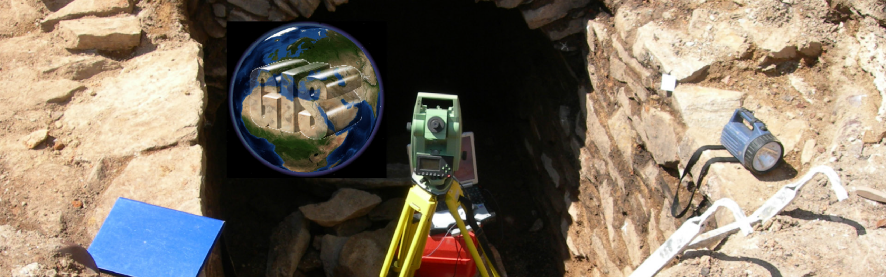

TachyGIS ist eine Idee zur archäologischen Grabungsvermessung mit Tachymeter und GIS.
QGIS-Plugins erlauben es, Funde und Befunde mit einem Tachymeter "live"
einzumessen.
Neben einer Tachymeter-Schnittstelle, die die gemessenen Punkte an QGIS
übergibt und
als Standard-Geodaten speichert, wurde eine archäologiespezifische
Benutzeroberfläche
entwickelt, die eine effektive Datenerfassung vor Ort ermöglicht.
TachyGIS fasst zwei (ursprünglich) getrennte Entwicklungen zusammen:
Auf den folgenden Seiten findet man weitere Details zu TachyGIS:
TachyGIS ist freie und quelloffene Software. Für TachyGIS gibt es folgende wichtige github-Repositorien:
TachyGIS is an idea to survey archaeological excavations with total
station and GIS. With two QGOS plugins it is possible to directly use
total station 3D survey points to edit points, lines and polygons in
QGIS and to efficiently record archaeological attributes. Some more
information is available at:
There are 2 important github-repositories belonging to TachyGIS:
(This TachyGIS-site tries to summarize information spanning projects around the TachyGIS idea.)
Landesamt für Archäologie Sachsen, Zur Wetterwarte 7, 01109 Dresden (Kontakt: Reiner Göldner)
Diese Webseite benutzt keine Cookies und erfasst keine personenbezogenen Daten.